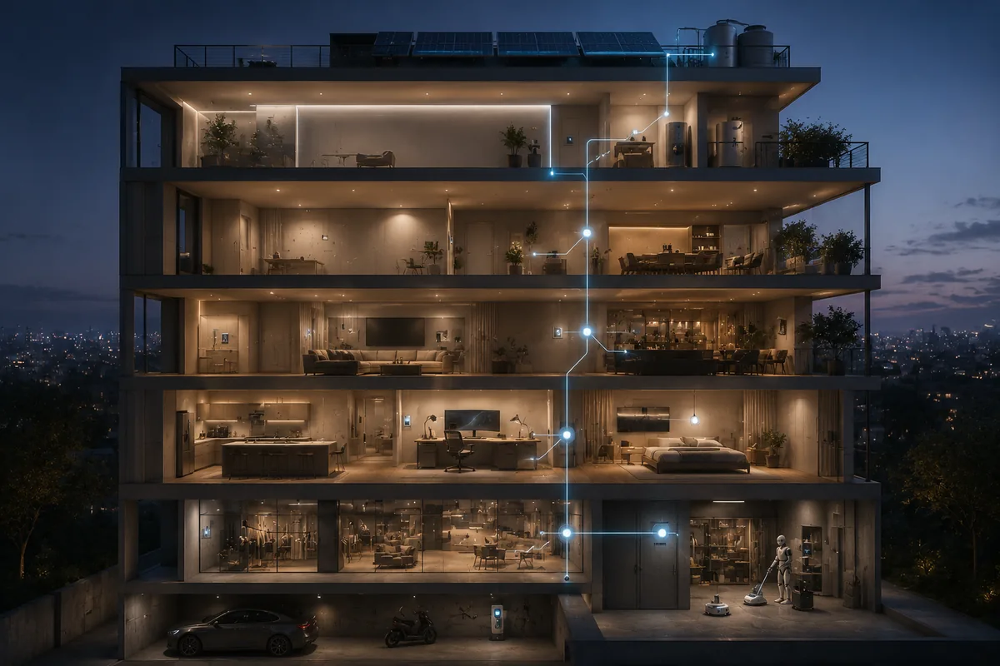

An ideal daily is a living system that holds its shape with low maintenance. I wrote it out as a building spec and an operating runtime.

# The Hardware: Five Floors and HOME OS
Concrete picture: a five-story standalone house somewhere in Taipei. The base layer runs on HOME OS, an AI house manager. Design principles: low visibility, full coverage. It tracks room occupancy, consumable inventory, who is home, and dispatches humanoid robots for cleaning during empty hours. The system does not push notifications or interrupt — it triggers only when needed.
Infrastructure (B1 & 1F)
B1 is vehicle parking. 1F is rentable commercial or independent space, with physical soundproofing and a separate entrance. External economic activity stays fully decoupled from the internal life system.
Core Compute (2F)
Three bedrooms, one living room, open floorplan. Personal rooms run minimal: standing desk, laptop, curved monitor, queen bed. The bathroom has auto-cleaning and dehumidification. The kitchen layout follows actual cooking habits.
Social Node (3F)
Dedicated gathering module. Guests check in through HOME OS, which logs space usage and recovery state and maintains a guest allowlist. Stops social events from leaking entropy into the rest of the system.
Reserved Slack (4F, 5F & Rooftop)
4F and 5F stay undefined — held open as expansion slack for future use. The rooftop is the energy hub: solar array, water tower, and a terrace kept as a low-frequency zone.
# Daily Runtime Timeline
With the hardware and software in place, the daily rhythm runs like this:
07:00 AM System Wake
HOME OS opens the curtains on the natural light cycle. A floor yoga mat handles a short stretch sequence — fixed boot routine for the body.
08:00 AM Enter Work Flow
Standing desk and curved monitor in position. Ambient audio plays focus frequencies. The system goes into Deep Work, zero interruptions.
03:00 PM Offline and Cool Down
Work block ends. Move to the living room or rooftop terrace. The brain cools off from heavy compute.
07:00 PM Social Node
Schedule dependent: 3F social module for gatherings, or solo time in the personal room — reading, writing, whatever the block calls for.
11:00 PM System Sleep
The whole building drops into low-power standby. Security and the sensor mesh take over perimeter watch.
# Co-Living: Connected Space, Decoupled Lives
Splitting the building across floors and function blocks is for one reason: every co-resident keeps their own life-runtime. Tight physical connection does not have to drag every lifestyle into the same loop. 2F is the core living zone. HOME OS runs cleaning, restocking, and basic maintenance for the whole building.
When "maintaining the building" stops being a daily tax, residents finally own their own time.
Each member runs their own tempo: travel on a whim, regular outings, or long stretches indoors — all without getting dragged into chore logistics. The building works as scaffolding, not as a leash.
System Conclusion
The ideal daily this spec describes contains no spectacle: no daily travel, no permanent adventure.
A stable space, a running system, and a group of people each living their own life.
Once those conditions hold, waking up safely every morning is itself the ideal daily, fully realized.
This month's theme: "The Ideal Daily." Written as a system spec for a life architecture that runs steadily.